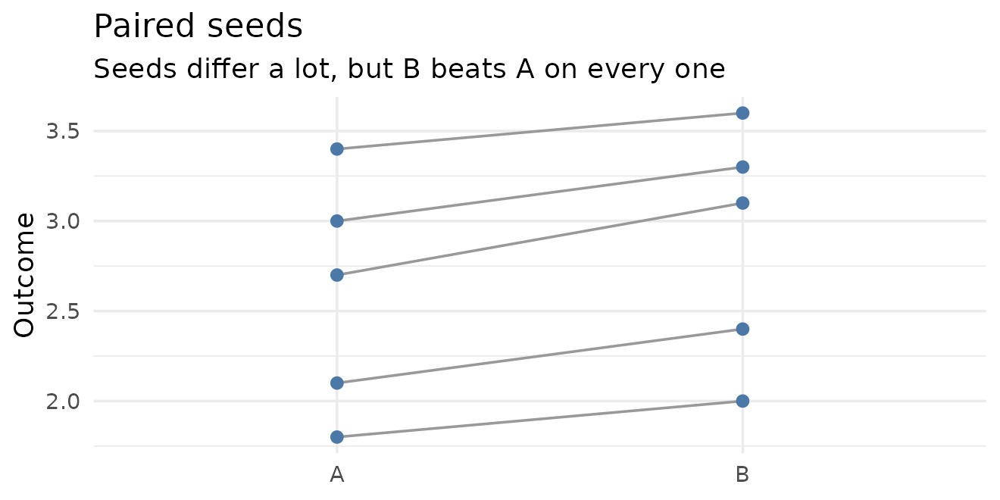
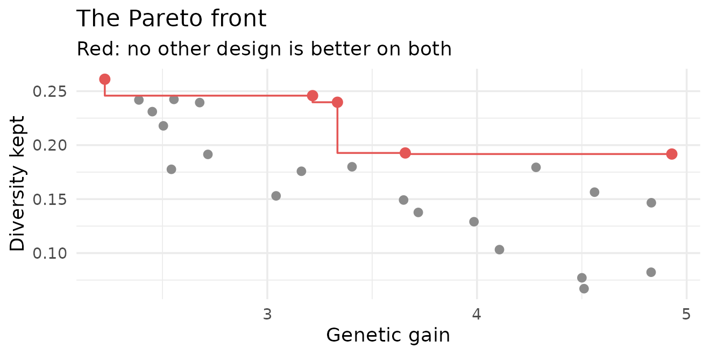

Simulation studies borrow words from statistics, machine learning and plant breeding. This page defines the ones used across tidyagsim, in plain language, with the function that goes with each.
The study
- Simulation spec
-
A recipe for one simulated experiment: which simulator to run and with
what settings. Made with
alphasim_program(),line_pipeline(),mapping_population()orsim_function(). A spec does nothing until a tuner runs it. - Design
- One combination of the settings you control, such as “60 lines at 4 locations with 2 reps”. A study compares designs.
tune()-
Put
tune()in place of a setting to say “try several values of this”. Every argument you mark becomes a column of the grid of designs. - Parameter range
-
The values a tuned setting may take, as a dials object. See them with
extract_parameter_set_dials(), change them withupdate(), or simply list the designs you want in a data frame passed asgrid. - Grid
-
The table of designs to run. You can give it yourself
(
expand.grid()is handy) or lettune_grid(grid = 20)spread 20 designs over the ranges. - Assumption, scenario
-
A setting you do not control and are unsure of, such as heritability or
G×E. Rather than choosing it, you run every design under several values
of it with
sim_scenarios(), and see whether the best design changes.
Randomness
- Replicate
-
One run of a design, with its own random founders, crosses and plot
errors. A study runs each design on many replicates
(
sim_replicates()) and reports averages. - Seed
- The number that fixes a replicate’s random draws. The same seed always gives the same replicate, so results are reproducible.
- Common random numbers (paired seeds)
- Every design runs on the same seeds, so they start from the same founders. Differences between designs are then measured within each seed, which removes shared luck from the comparison.

- Monte Carlo standard error (SE)
-
How much an average over replicates would move if you reran the study
with new seeds. It shrinks with the square root of the number of
replicates, so 4 times the replicates halves it. Reported by
collect_metrics()asstd_err.
Measuring designs
- Metric
-
One number each replicate reports, such as
release_gainorcost. Collected in asim_metric_set(), which also records whether bigger or smaller is better (the metric’s direction). The first metric is the one tuners optimize by default. - Trajectory
-
A replicate’s yearly record (mean genetic value, variance, cost), kept
with
control_sim(save_outcomes = TRUE)and gathered withcollect_trajectories().
Choosing
- Constraint
-
A limit on a metric’s average, such as
constraints = list(cost = 30000). Designs that break it are left out when ranking. - One-standard-error rule
-
Among designs whose average is within one SE of the best, pick the
simplest or cheapest (
select_by_one_std_err()). It avoids paying for a “best” that is only luck. - Pareto front
-
When goals conflict, such as gain now against diversity for later, the
designs that no other design beats on every goal at once
(
pareto_front()). Every design off the front can be improved for free.

- Racing
-
Run every design on a few replicates, drop those clearly worse than the
leader, and spend further replicates on the rest
(
tune_race()). - Bayesian optimization
-
Fit a statistical model to the designs run so far and use it to choose
the most promising design to run next (
tune_bayes()). Useful when each design is expensive and there are too many to try.
Breeding terms used in the examples
- Founders
-
The starting population of a simulation, made fresh for each replicate
by
asr_founders(). - Cycle
- One round of crossing, line development, testing and selection of new parents.
- Single-seed descent (SSD)
- Advancing each line by selfing one seed per plant per generation until it is nearly inbred, often in a greenhouse or winter nursery.
- PYT, AYT
- Preliminary and advanced yield trials. Many lines with few plots, then few lines with many plots.
- Heritability (plot and entry mean)
- How much of the variation among plots is genetic. Plot heritability is for a single plot. The heritability of a line’s mean over locations and reps is higher, which is why trials have several plots.
- G×E (genotype by environment)
- Lines rank differently in different environments. Extra locations average it out, and extra reps at the same location do not.
- Selection intensity
- How hard you select: keeping the top 5% is more intense than keeping the top 30%. More intensity gives more gain now and uses up variance faster.
- Accuracy
- The correlation between what you select on (trial means, predictions) and true genetic value.
- Genetic variance, expected heterozygosity
- Two measures of the diversity left for future selection, both reported relative to the founders.
- Gain per year, gain per cost
- Genetic gain divided by the years or money it took. They are the fair way to compare programs that run at different speeds or budgets.